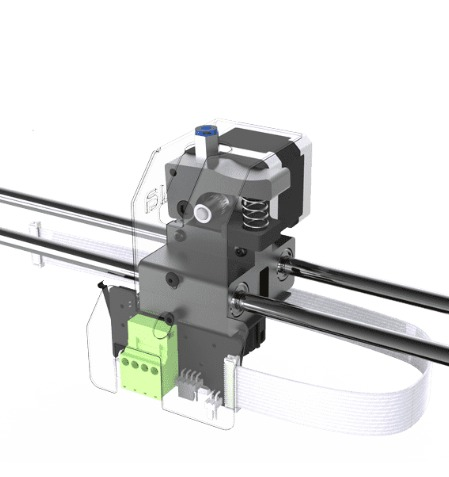
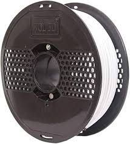
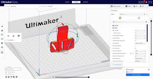

About
3D printing, also known as additive manufacturing, is a process of creating three-dimensional objects from a digital model. Unlike traditional manufacturing methods that involve subtracting material from a solid block (like machining) or shaping material through molds (like casting), 3D printing builds objects layer by layer.
Objectives
Visualization:
One of the primary objectives of 3D design is to create visual representations of objects or environments. This can be for architectural visualization, product design, character modeling for animation or gaming, or any other application where visualizing a concept in three dimensions is necessary.Prototyping:
3D design is often used to create prototypes of products before they are manufactured. Prototyping allows designers to test the form, fit, and function of a product before investing in mass production. This helps identify and address design flaws early in the development process.Customization:
3D design enables customization and personalization of products to meet the specific needs and preferences of individual users. Whether it's custom-fitted prosthetics, personalized jewelry, or tailored architectural designs, 3D design allows for unique and one-of-a-kind creations.Simulation and Analysis:
3D design is used to create virtual models that can be subjected to simulations and analysis. This includes stress analysis, fluid dynamics simulations, thermal analysis, and more. By simulating how a design will behave under various conditions, designers can optimize performance and minimize risks.Collaboration:
3D design facilitates collaboration among multidisciplinary teams by providing a common platform for sharing and reviewing design concepts. Collaborative design tools allow designers, engineers, and stakeholders to work together in real-time, iterate on designs, and provide feedback throughout the design process.


3D Printer
- Fused Deposition Modeling (FDM) printers: These printers use thermoplastic filaments that are heated and extruded through a nozzle layer by layer to build objects.
- Stereolithography (SLA) printers: SLA printers use a liquid resin that is cured layer by layer using a UV laser or light source.
- Selective Laser Sintering (SLS) printers: SLS printers use a high-powered laser to sinter powdered material, such as plastics or metals, layer by layer to create objects.
- Print bed: The surface on which the object is built.
- Extruder/nozzle: The component that heats and deposits the printing material (filament or resin).
- Build platform: The platform that moves vertically to accommodate each layer of the object.
- Control electronics: The circuitry and software that control the movement of the printer and the deposition of material.
- Cooling fans: Fans that help cool the printed material to ensure proper layer adhesion and dimensional accuracy.
- Prototyping: Rapid prototyping allows for quick iteration and testing of design concepts.
- Manufacturing: 3D printing enables on-demand manufacturing of custom or low-volume parts.
- 3D printers are used across various industries for prototyping, manufacturing, research, education, and hobbyist purposes. They are employed in aerospace, automotive, healthcare, architecture, fashion, jewelry, and more.
Types of 3D Printers:
There are several types of 3D printers, each utilizing different technologies to create objects. Some common types include:
Components of a 3D Printer:
While specific components can vary depending on the type and model of the printer, common components include

Materials:
3D printers have numerous applications across various industries, including:

Applications:
3D Print
- Material Filament: The nozzle heats up to melt the thermoplastic filament, which is typically supplied in spools. The molten filament is then deposited layer by layer to build the object.
Nozzle:
The nozzle is a critical component of FDM (Fused Deposition Modeling) 3D printers. It is a small opening at the end of the printer's extruder through which the molten filament is extruded onto the build platform. The diameter of the nozzle determines the width of the extruded filament and, consequently, the resolution of the printed object.
